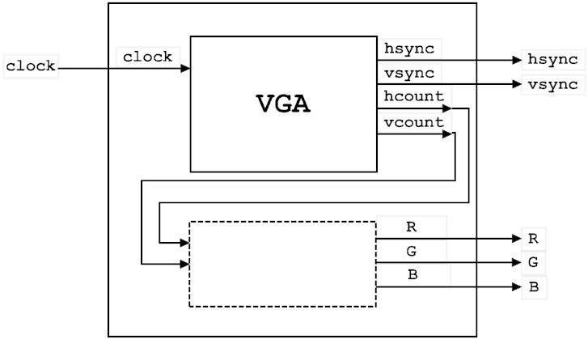
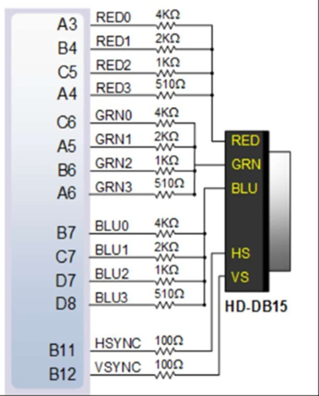
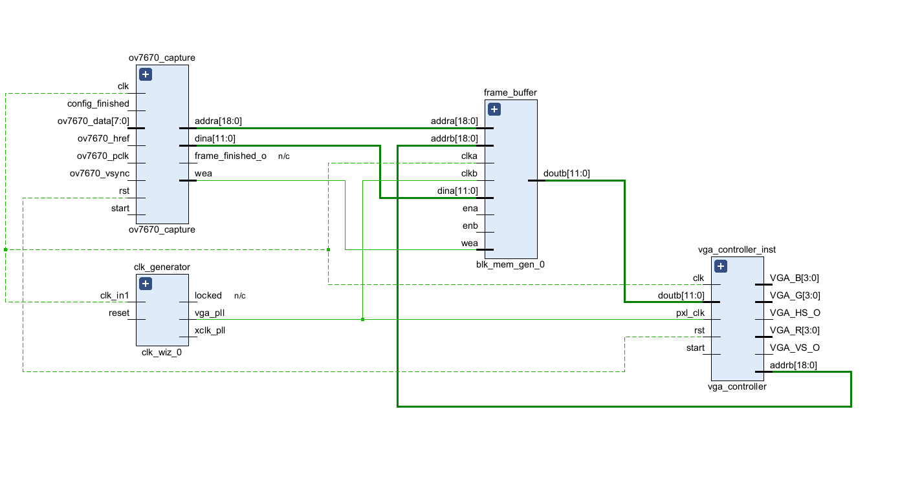
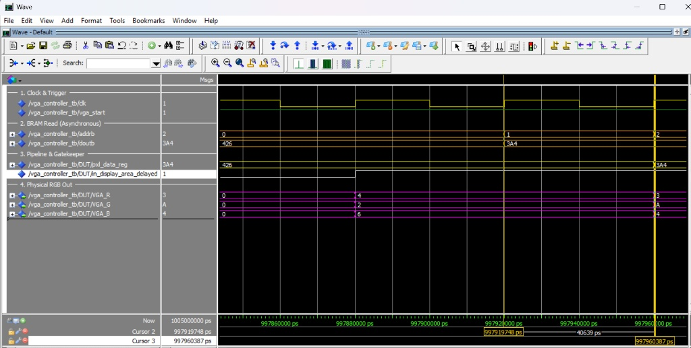

פיתוח מערכת מבוססת FPGA להתראת נפילה לחולי דמנציה

מגיש: יוסי ברים | הנדסת חשמל שנה ד' | המרכז האקדמי לב
ארכיטקטורת המערכת
Inputs:
clk, reset
ov7670_vsync, href, pclk
ov7670_data[7:0]
clk, reset
ov7670_vsync, href, pclk
ov7670_data[7:0]
→
מערכת התראת נפילה
מבוססת FPGA
מבוססת FPGA
→
Outputs:
VGA_HS_O, VGA_VS_O
VGA_R, G, B
ov7670_xclk, pwdn
VGA_HS_O, VGA_VS_O
VGA_R, G, B
ov7670_xclk, pwdn
ov7670_capture
→
frame_buffer
→
vga_controller
→
D to A Converter
מבוא ל-VGA: קונספט תותח האלקטרונים (CRT)

מבוא ל-VGA: סריקה קווית (Raster Scan)

תזמוני VGA: הפיזיקה מאחורי המספרים
| פרמטר | מחזורי שעון | הצורך הפיזיקלי המקורי (CRT) | המימוש שלנו (RTL) |
|---|---|---|---|
| Active Display | 640 | הקרן מציירת את הפיקסלים הפיזיים על המסך משמאל לימין. | שליפת נתונים מה-BRAM ושידור צבע (RGB) פעיל. |
| Front Porch | 16 | מרווח זמן לקרן 'להירגע' בסוף השורה לפני שחוזרת אחורה. | כיבוי מיידי של ה-RGB ל-'0000' למניעת מריחות. |
| Sync Pulse | 96 | מכת מתח (טריגר) שמאלצת את הקרן לקפוץ חזרה שמאלה. | הורדת האות הפיזי HSYNC ל-'0' למשך 96 שעונים. |
| Back Porch | 48 | המתנה לייצוב הקרן בתחילת השורה החדשה בצד שמאל. | המשך השהיית ה-RGB על '0000' עד הגעה לפיקסל הראשון. |
תזמונים והחשכה בחומרה (VGA Controller)


מסלול הנתונים: חישוב כתובת הפיקסל ושליפה

עיבוד הפיקסל: ניתוב ל-RGB ומנגנון ה-Blanking

המרת DAC אנלוגית ומחבר ה-VGA


מחלק המתח ומשקלי הביטים

סיכום תיאורטי: לקראת ארכיטקטורת החומרה

מבט-על: זרימת נתונים ותחומי שעון (RTL)

ניהול שעונים במערכת (Clock Generator)

זיכרון ה-BRAM: חוצץ התמונה

ממשק המצלמה: מהעולם הפיזי אל הזיכרון

ממשק הזיכרון: ממדים וסנכרון נתונים

אימות מסלול הנתונים: בקר ↔ BRAM

מבוא לאימות התקן: מחזור שורה שלם (Ts)

ליבת התצוגה: אימות האזור הפעיל (Tdisp)

אכיפת Blanking: שוליים (Porches)
אכיפת Blanking: המרפסת האחורית (Back Porch)

דופק הסנכרון (Tpw) ווריפיקציה אוטומטית

המעבר לחומרה: מסימולציה ל'קופסה שחורה'
Artix-7 FPGA (קופסה שחורה)
אין גישה לאותות פנימיים
אין גישה לאותות פנימיים
→
פינים בלבד
(RGB, Sync)
(RGB, Sync)
דיבוג בתוך הסיליקון: Vivado ILA (קופסה לבנה)
| יעד הבדיקה | מגבלת ה'קופסה השחורה' | האות שנדגום ב-ILA |
|---|---|---|
| זרימת נתונים ו-Latency | רואים רק את הפיקסל הסופי מתחלף. | addrb, doutb, pxl_data_reg |
| מיקום אופקי | לא ניתן לדעת איזה פיקסל משורטט. | hsync_debug |
| אכיפת שחור (Blanking) | רואים מסך חשוך, ללא הקשר תזמוני. | in_display_area_delayed |
עלות הדיבוג: ניתוח משאבי חומרה

| Module | LUTs | Registers | BRAM |
|---|---|---|---|
| VGA Controller | 47 | 52 | 0 |
| ILA + Debug Hub | 1,732 | 2,642 | 1.5 |
| Total Design | 2,756 | 2,890 | 105 |
Post-Silicon Validation: מסלול נתונים בסיליקון
סיכום וריפיקציה: סימולציה מול סיליקון
| האות ב-Data Path | ModelSim (וירטואלי) | Vivado ILA (הסיליקון) |
|---|---|---|
| bram_address_reg | עדכון מתמטי באפס זמן. | ניתוב פיזי ל-19 חוטים המפעילים את הזיכרון. |
| doutb | המידע מופיע מיידית ובקסם. | חשיפת זמן התגובה האמיתי של החומרה. |
| pxl_data_reg | השמת משתנה פשוטה. | הפליפ-פלופים דוגמים כראוי למרות ההשהיה. |
| in_display_area_dly | דגל בוליאני. | פיקוד פיזי שכופה ניתוב על המרבבים. |
| vga_r/g/b_int | מחרוזות תווים. | חיווט פינים לאדמה למניעת זליגות צבע. |